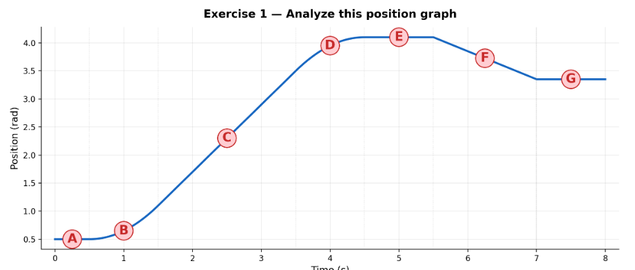
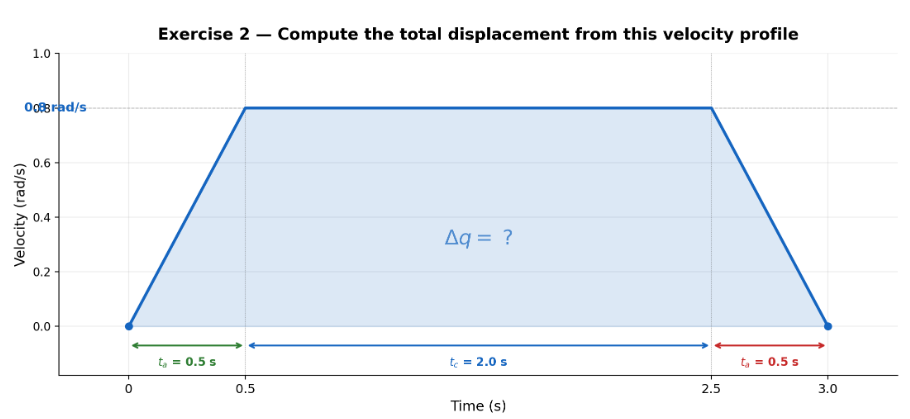
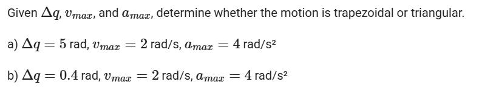
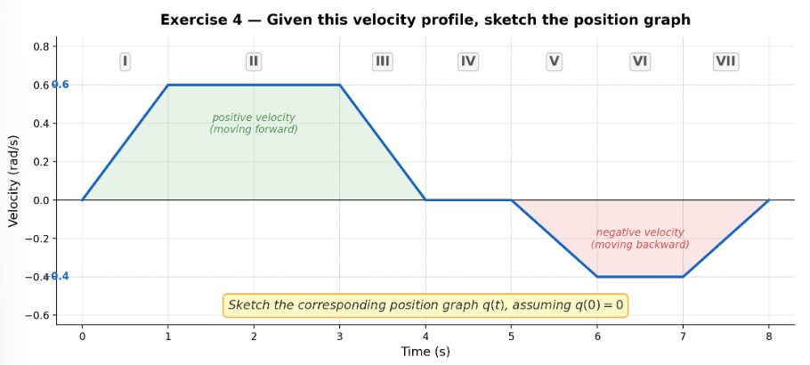
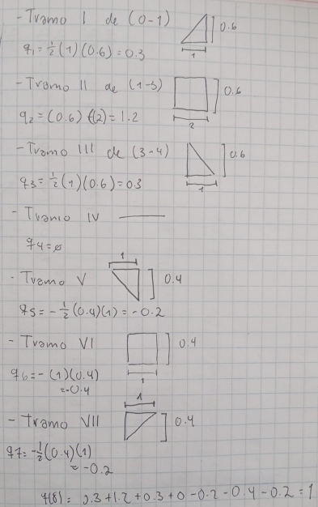
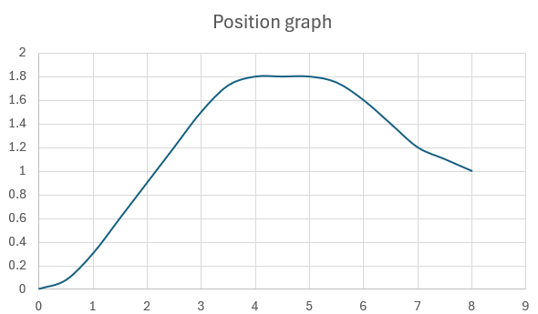
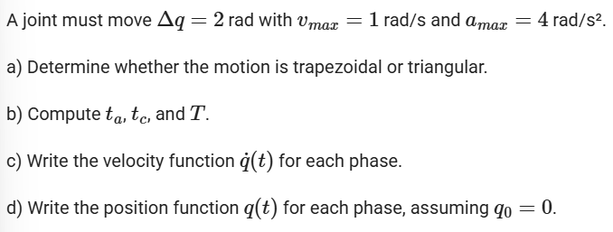
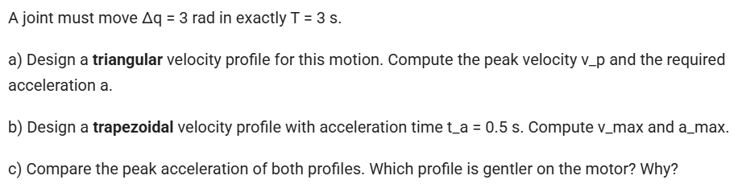

Trajectory planning
Exercise 1
Given a position graph, identify: where velocity is zero, where velocity is maximum, and where acceleration is positive or negative.

For this exercise, keep in mind that:
Speed 0 = where the graph is horizontal
Maximum speed = where the slope is steepest
Positive acceleration = when the slope increases (upward curve)
Negative acceleration = when the slope decreases (downward curve)
Point analysis:
Zero velocity: A, E, G.
Maximum velocity: D
Positive acceleration: B, C.
negative acceleration: F
Exercise 2
Given a trapezoidal velocity graph, compute total displacement from the area under the curve.

Formula:
Δq = ½ (ta)(vmax)+(ta)(vmax) + ½ (ta)(vmax)
Procedure:
Δq = ½ (0.5)(0.8) + (2)(0.8) + ½ (0.5)(0.8)
Δq = 2 rad
Exercise 3

Conditions:
Comparison of:
Δq & vmax²/amax
If: Δq ≥ vmax²/amax (Trapezoidal)
If: Δq < vmax²/amax (Triangular)
A)
Δq=5
vmax=2
amax=4
vmax/amax= 2²/4 = 4/4 = 1
5>1 = TRAPEZOIDAL
B)
Δq=0.4
vmax=2
amax=4
vmax/amax= 2²/4 = 4/4 = 1
0.4<1 = TRIANGULAR
Exercise 4
Sketch the position graph corresponding to a given velocity graph.



Exercise 5

A)
Δq=2, vmax=1, amax=4
Δqmin = vmax² / amax = (1)² / 4 = 0.25 rad
2 > 0.25 → TRAPEZOIDAL
B)
ta = vmax / amax = 1 / 4 = 0.25 s
tc = ((Δq − vmax) (ta)) / vmax = ((2 − 1) (0.25)) / 1 = 1.75 s
T= 2ta + tc = 0.5 + 1.75 = 2.25s
C)
Acceleration (0 ≤ t ≤ t_a): q̇(t) = (amax) (t) = 4t
Constant (ta ≤ t ≤ ta + tc): q̇(t) = vmax = 1 rad/s
Deceleration (ta + tc ≤ t ≤ T): q̇(t) = (vmax − amax) (t − (ta + tc)) = 1 − 4·(t − 2.0)
D)
Acceleration (0 ≤ t ≤ 0.25):
q(t) = (½) (amax) (t²) = 2t²
Constant (0.25 ≤ t ≤ 2.0):
q(t) = q(ta) + vmax·(t − ta) = (0.03125 + 1) (t − 0.25)
Deceleration (2.0 ≤ t ≤ 2.25):
q(t) = q(t_a + t_c) + v_max·(t−2.0) − ½·a_max·(t−2.0)² = 1.78125 + (t−2.0) − 2·(t−2.0)²
Exercise 6

With: Δq=3, T=3
A) Triangular velocity profile
Formula:
Δq=½ Tvp
3 = ½(3)vp ⇒ vp = 2rad/s
Acceleration:
a = vp/(T/2) = 2/1.5 = 1.33 rad/s²
B) Trapezoidal velocity profile
With: ta=0.5
tc=3−2(0.5)=2
3=vmax(0.5+2)
vmax= 3/2.5 = 1.2
a= vmax/ta = 0.51.2 = 2.4
C) Comparison
Triangular: a = 1.33
Trapezoidal: a = 2.4
A triangular profile requires lower acceleration, making it smoother and less demanding for the system. In contrast, the trapezoidal profile reaches lower peak velocity but requires higher acceleration, which may increase mechanical stress.